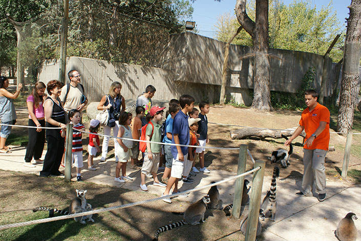
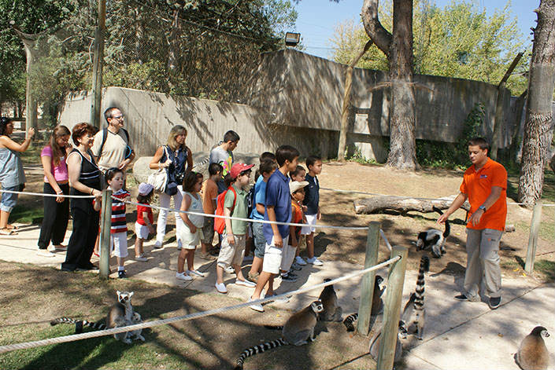

¡Bienvenidos al maravilloso mundo del Zoo de Loja!
Descubre la vida salvaje: Adéntrate en los distintos hábitats que hemos recreado cuidadosamente para nuestros residentes animales. Pasea por la selva tropical, donde podrás observar coloridos pájaros tropicales y monos juguetones. Sumérgete en el mundo submarino en nuestro acuario, donde criaturas fascinantes nadan graciosamente. Explora la sabana africana y observa de cerca a los majestuosas jirafas.

Actividades
"¡Descubre la magia del reino animal en nuestro zoo y vive una experiencia inolvidable! Explora fascinantes exhibiciones, interactúa con animales asombrosos, disfruta de emocionantes espectáculos y sumérgete en un mundo lleno de diversión y aprendizaje para toda la familia. ¡Únete a nosotros y crea recuerdos inolvidables mientras te adentras en la increíble diversidad de la vida salvaje!"
 

Ofrécete como Voluntario
"¿Te apasiona la conservación de la vida animal y quieres ser parte de nuestro equipo comprometido? Únete a nuestro programa de voluntariado en el zoo y conviértete en un agente de cambio. Como voluntario, tendrás la oportunidad de trabajar codo a codo con nuestro equipo de expertos en el cuidado de los animales, participar en actividades de enriquecimiento ambiental, colaborar en programas de educación ambiental y contribuir directamente a la preservación de especies en peligro de extinción. ¡Únete a nosotros y forma parte de una comunidad que comparte tu amor y compromiso por la vida salvaje!"